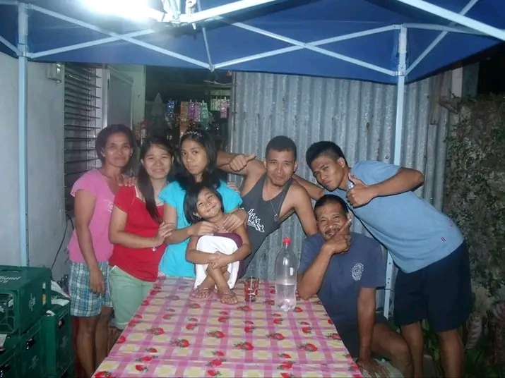

This photo is special to me because we are complete. I'll never forget the bond we shared in this moment.
This is one of my favorite photos of me when I was a child. Every time I see it, I want to tell my younger self that there will be lots of problems along the way, but I will always survive and continue striving to make the little me proud.
I love this photo because it's me with my parents. I'm just happy to see that they are proud of me because I graduated from SHS.

This photo is very dear to me because it makes me feel nostalgic.